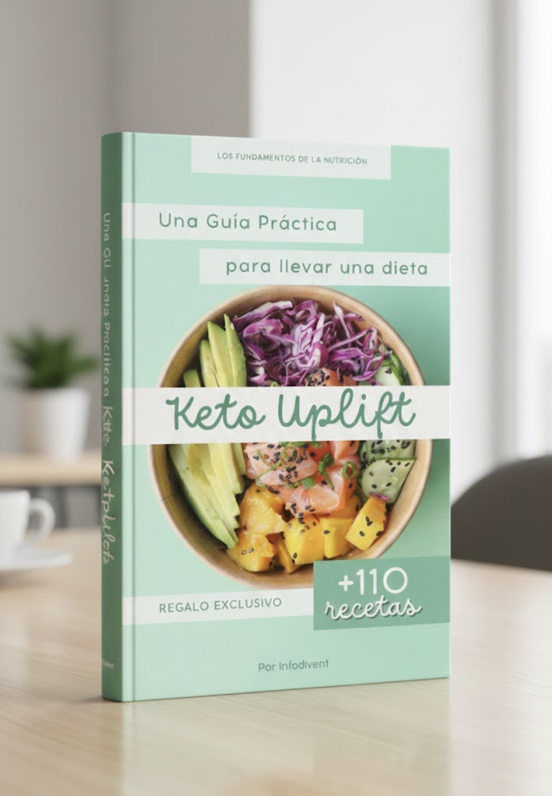
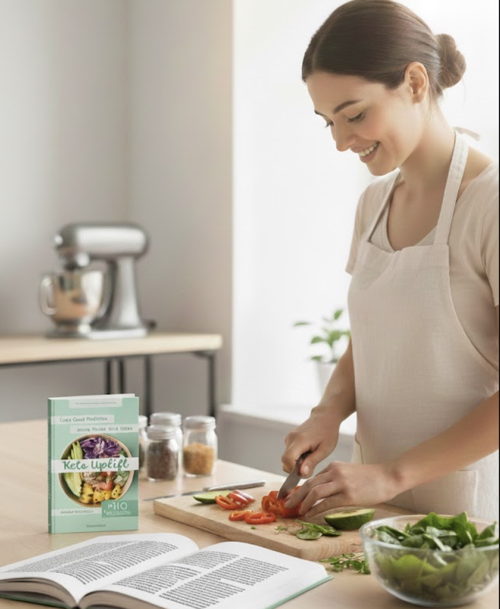

Pago Seguro
Garantía de 7 días
¡TRANSFORMA TU CUERPO Y TU ENERGÍA!

MÁS DE 110 RECETAS FÁCILES, RÁPIDAS Y DELICIOSAS
PARA UNA VIDA SIN INFLAMACIÓN Y LLENA DE VITALIDAD
¿Cansada de sentirte hinchada, sin energía y sin saber qué comer?
Descubre cómo sentirte ligera, satisfecha y llena de energía mientras disfrutas de comidas deliciosas.
Resultados visibles desde el día 5, sin pasar hambre y usando ingredientes 100% naturales.
❌ Antes:
No sabes qué cocinar, terminas comiendo lo primero que encuentras y te sientes pesada e inflamada.
✅ Después:
Tienes un plan claro, sabes exactamente qué preparar en menos de 10 minutos y despiertas cada día con más energía y menos inflamación.
Oferta exclusiva por tiempo limitado
$29 USD sólo $12 USD
7 días de garantía
Pago Seguro
Garantía de 7 días
110+ RECETAS KETO: Desayunos, almuerzos, cenas y extras
TODAS CON INGREDIENTES NATURALES: Nada de procesados, harinas o azúcares
PREPARACIÓN EN MENOS DE 10 MINUTOS: Ideal para tu ritmo de vida
ACCESO INMEDIATO Y PARA SIEMPRE
BONOS EXCLUSIVOS DE REGALO
INFORMACIÓN NUTRICIONAL COMPLETA: Macros y valores por porción
LISTAS DE COMPRA ORGANIZADAS: Para facilitar tus compras semanales
GUÍAS DE PLANIFICACIÓN: Tips para organizar tus comidas keto

Jugos Keto Uplift: valorado en $9 hoy te lo llevas en $4
Postres Keto Uplift: valorado en $9 hoy te lo llevas en $4
Snacks saludables Uplift: valorado en $10 hoy te lo llevas en $5
Valor total: $28 te lo llevas hoy en $13
Pago Seguro
Garantía de 7 días
"Llevaba años con molestias digestivas constantes y no sabía qué hacer. Había probado de todo, pero nada funcionaba. En solo 3 días con las recetas keto ya noté la diferencia. Ahora puedo comer sin miedo y me siento increíble. Las recetas son deliciosas y fáciles de preparar. ¡Por fin encontré algo que realmente funciona para mí!"
"No pensé que comer keto fuera tan fácil y rico. Al principio tenía dudas porque pensé que sería muy restrictivo, pero estas recetas me demostraron lo contrario. Mis niveles de energía están por las nubes desde que empecé. Me siento más activa durante todo el día y ya no tengo esos bajones de energía de la tarde. Lo mejor es que toda mi familia disfruta de estas comidas."
"Las recetas son tan rápidas que hasta yo, que no cocinaba nada, me animé. Siempre pensé que cocinar era complicado y me daba pereza, pero estas recetas keto cambiaron mi perspectiva completamente. En menos de 10 minutos tengo una comida deliciosa y saludable lista. ¡Increíble! Ahora disfruto cocinando y me siento mucho mejor físicamente."
No. Es una guía de alimentación keto basada en ingredientes naturales, sin procesados. Comes rico, sano y sin pasar hambre.
Para nada. Todas las recetas usan ingredientes fáciles de encontrar en cualquier supermercado.
La mayoría de nuestras usuarias reportan menos inflamación y más energía entre el día 3 y 5.
Sí, las recetas están diseñadas para ser adaptables. Muchas son naturalmente sin gluten y sin lácteos. Si tienes alergias específicas, puedes modificar los ingredientes según tus necesidades.
Sí. Las recetas evitan ingredientes inflamatorios como harinas y azúcares, ideales para digestiones sensibles. Si tienes una condición médica, siempre consulta con tu especialista.
¡Perfecto! Las recetas son paso a paso, con ingredientes simples y preparación en menos de 10 minutos.
Tu información está 100% segura
Ambiente seguro y autenticado
100% revisado y aprobado
Si en una semana no notas mejoría, te devolvemos tu inversión.
COMPRA 100% SEGURA · ENTREGA INMEDIATA · ACCESO DE POR VIDA
¡SÍ, QUIERO SENTIRME MEJOR!(Precio con descuento: $12 USD)